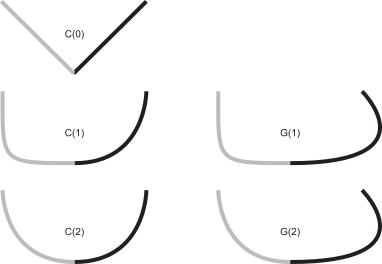

Page 7: Smoothness and Continuity
A goal of this workbook is to explain how we make “smooth” curves. If we didn’t care about smoothness, we could just use polylines.
The problem is to define “smooth” in a consistent and practical way. We’re going to focus on a specific kind of smoothness: local smoothness, or continuity. Other types of smoothness (that are more global) are harder to define.
Consider this example: a sine wave. The sine wave is continuous - there are no breaks. If you look at any point on the sine wave, you can see its derivatives are well-determined. However, the sine wave is very wiggly. If you look at it over a range, you see a lot of wiggles.
There are ways to measure the amount of “wiggliness” over a range of a curve. Unfortunately, these turn out to be complex, and not always standardized. Therefore, our focus in this workbook is on local properties that occur at specific points that definitively break our notion of smoothness.
Taking a Break: Simple Discontinuities
Consider this parametric function:
If you prefer code…
|
|
In all of these, the curve “jumps” at . It is discontinuous.
And if you want to see this visually:
Discontinuity is a local property. It describes what is happening at one particular point (u value). Formally, if we approach the point from below, we get a different answer than if we approach it from above. In terms of equations, , even as approaches 0.
- When we approach =0.5 from below (=0.4, 0.49, 0.499, …), our curve approaches the point (.5, 0).
- When we approach =0.5 from above (=0.6, 0.51, 0.501, …), our curve approaches the point (.5, 1).
This is a discontinuity in position.
We will define a smooth curve as one that has no discontinuities over its range.
One thing to notice: in most cases, discontinuities happen at places where we make a change or switch. We know that the line segments don’t have discontinuities. We only need to check for them at the switching points. More generally, many kinds of well-behaved functions (e.g., polynomials) don’t have discontinuities: we only get them when we put pieces together. We’ll talk about this a lot on the next page.
Other kinds of discontinuities
The previous example was a discontinuity in position. Consider this function:
Notice that this curve is continuous in position. It approaches (.5,.5) from above and below.
However, at , it has a discontinuity in its tangent (first derivative). If we approach from below, the tangent is (1,1); if we approach from above, it is (1,-1).
This now might begin to connect to an intuitive definition of smoothness. A discontinuity, either in position or a derivative, leads to a place of “non-smoothness”.
We can do the same thing for the second derivative. This is a little harder to see. We’ll connect a horizontal line for the first half, and a parabola for the second half.
At , this curve has no positional discontinuity. It has no tangent discontinuity (it has 1st derivative continuity). For both the line segment and the parabola (at ) the first derivative is (1,0).
But, the second derivative changes abruptly when we switch from the line to the parabola. It switches from (0,0) to (0,1). This is a discontinuity in the second derivative.
Visually, the effect of a sudden change in 2nd derivative can be subtle. However, the sudden change in acceleration can cause all kinds of bad effects. In terms of motion, it feels “jerky”. Visually, it can cause breaks in how light reflects off the surface.
We could look at even higher order discontinuities, but these are even harder to see visually. Third derivative continuity is very important for designing shapes where we care about how things flow around them (e.g., airplane wings and boat hulls). I don’t actually know the fluid dynamics myself, but I have heard it from enough different sources that I believe it to be true.
Defining continuity
We define continuity as the absence of discontinuity.
We say that a curve is C(0) continuous (or has C(0) continuity, or even just “is C(0)”) if it has no discontinuities in value across its range.
A little weirdness in notation: we are calling the value itself the “0th derivative”. That lets us generalize the definition nicely…
We say that a curve is C(n) continuous if it has no discontinuities in its nth derivative. Note: by definition, this implies that the curve is C(m) continuous for all values of m less than n. For example, if a curve is not C(0), then it has a discontinuity in position which means there is a place where the 1st derivative is not defined, so it cannot be continuous.
So, for our examples:
- The step function is not C(0). It has a discontinuity in position.
- The triangle example is C(0) but not C(1). It is continuous in position, but not in its first derivative.
- The line/parabola example is C(1) but not C(2). It is continuous in position and first derivative, but not in 2nd derivative.
Generally, if we say a curve is C(n), we are implying that it isn’t more than that. So when we say the triangle example is C(0), we imply it is not C(1).
While the definition of continuity is the absence of discontinuity over the entire range, we really only need to check at the switching points because the pieces we are connecting have continuity over their range.
Two Circles
Here’s a slightly more complicated example…
view - look at the box and experiment with it
examine - look at the code for the box
edit - change the box's content
rubric - several steps are suggested in the rubric page - form elements on page in rubric
03-07-01.html 03-07-01.svg
{kind=link}
That’s just an SVG picture (so you can see how this was made). But, if I write out the equations, you will see two circular arcs connect at u=0.5. At the connection point, whether you are approaching from below or above, the tangent vector is horizontal and to the left.
|
|
Here is the drawing code to animate it:
view - look at the box and experiment with it
examine - look at the code for the box
edit - change the box's content
rubric - several steps are suggested in the rubric page - form elements on page in rubric
03-07-02.html 03-07-02.js
This connection of two arcs is , but it is not - the second derivatives are different between the first (top) part and the second (bottom) part. In the former, at 0.5 the derivative is turning upwards, whereas in the latter it is turning downwards. The 2nd derivative discontinuity is this rapid change: elsewhere (as we go around the circle) the second derivative does change, but it changes smoothly.
Also, notice that when we talk about continuity, we have only needed to consider the points where our piecewise curves switch between different pieces. The functions we have chosen are generally continuous in between these exceptional points. When we assemble curves from smooth pieces (such as arcs and polynomials), the potential for discontinuities is at the connections.
A Notational Switch
We’ve been defining the switching points in the middle of the u range. A notation that may be easier going forward is to define the switch as being between two functions, both with unit parameterizations. Here I define one unit parameterized function with a switch in the middle, and define it in terms of two other functions. I need to scale and shift each of their “halves” of the parameter range (in the overall function) to the full range.
Writing each piece as a unit parameterization will be handy when we start putting pieces together. Of course, we don’t need to force the “outer” function to be a unit parameterization. Given that it is made of two pieces, it makes sense to define it as being over the range [0,2]. Notice that I switched to using t, not u, since we no longer are defining the unit parameter range.
This can generalize to many segments.
Geometric Continuity
Suppose we aren’t animating the pen, only looking at the resulting drawing. If we have a curve that changes its derivative, but we can’t see that change, we might not care.
For example, consider the curve:
|
|
The curve is a straight line, but the pen speeds up halfway (in parameter space). This curve is not , since the derivative changes sharply at =0.5. However, since the direction of the tangent does not change (only its speed), this might be “continuous enough”. We call this easier kind of continuity (where the direction remains the same, even if the magnitude might change) geometric continuity (as opposed to the derivative continuity we had been discussing). We denote geometric continuity as (for th derivatives). So means that the curve’s first derivatives have no discontinuities in their direction. (Note that continuity implies .)
Because the “speed” of the parameterization might be different, even if the derivatives match, we define a different type of continuity that ignores the speed. We define geometric continuity to be the condition where the derivative of the end of one segment (approaching the switch from below) differs only in magnitude from the beginning of the next (approaching the switch from above). That is, where the condition requires:
More formally, geometric continuity is defined in terms of arc-length parameterizations. However, since we haven’t introduced those yet, we’ll stick to the intuition-based version.
Another Demonstration of Continuity
This demo shows the difference between C(1) and C(2) curves. It uses Bezier curve segments (that we will learn about later in the workbook), but it will give you a sense of continuity - even if we can’t talk about what the curves are.
The blue segment is defined by points P0,P1,P2,P3. The purple segment is defined by points Q0,Q1,Q2,Q3.
You can move the blue and purple points around. The gray points are constrained to make sure that the two curves always meet with C(1). Depending on whether the checkboxes are checked, the curves will be forced to meet with either G(2) or C(2) continuity. You can turn these restrictions off and see what happens when you break the 2nd order continuity.
The demo also has “curvature combs”, these are the little hairs that stick out of the curve to show how the normal vectors change over the curve. You can look at where the curves meet to see the 2nd order continuity. There will be a jump (or a change in the rate of change) in the combs, but it is often hard to see.
In order to meet with positional continuity, P3 and Q0 need to be in the same place (they are, and the labels over-write each other).
In order to meet with tangent continuity, P2, P3/Q0 and Q1 need to be in a line. They are locked to this.
In order to have C(2) continuity, point Q2 must be in a specific place determined by P1,P2, and P3. There is a checkbox that locks it there.
To have G(2) continuity, point Q2 can be anywhere on a line (called the locus) that is determined by P1, P2 and P3. There is a checkbox that puts Q2 on the line. Remember that since C(2) implies G(2), the point that produces C(2) is on the line that produces G(2).
{kind=link}
We’ll come back to explain this demo more when we discuss Bezier curves.
Summary: Continuity

Figure 1:
An illustration of various types of continuity between two curve segmentsAn illustration of some continuity conditions is shown in Figure Figure 1. A discontinuity in the first derivative (the curve is but not ) is usually noticeable because it leads to a sharp corner. A discontinuity in the second derivative is sometimes visually noticeable. Discontinuities in higher derivatives might matter, depending on the application. For example, if the curve is a motion, an abrupt change in the 2nd derivative is noticeable, so 3rd derivative continuity is often useful. If the curve is going to have a fluid flowing over it (for example if it is the shape for an airplane wing or boat hull), a discontinuity in the 3rd or 4th derivative might cause turbulence.
The ideas in this page were discussed in 2023 lectures:
Part of 2023 Lecture 9 | Slides
Continuity is the key to putting pieces together. On Next: Page 8 - Polynomial Pieces we will look at polynomial segments, which are common pieces to put together.